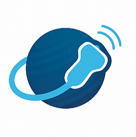

SonoVerse
Visual Ultrasound Glossary
Filter by organ (All)
Adrenal gland
Bowel
Gallbladder and biliary tract
Kidney
Liver
Liver vasculature
Pancreas
Parathyroid
Spleen
Thyroid
Adrenal gland
Adrenal adenoma
Clip 1 B-mode
Bowel
Appendiceal mucocele
Clip 1 B-mode + Color
Bowel – Superior Mesenteric Artery (SMA) Syndrome
Clip 1 B-mode
Gallbladder and biliary tract
Adenomyoma
Clip 1 B-mode + Color + microV
Adenomyomatosis
Clip 1 B-mode
Aerobilia (Pneumobilia)
Clip 1 B-mode
Cholesterol Crystals in Intrahepatic Bile Ducts
Clip 1 B-mode
Gallstone (Large) + Adenomyoma
Clip 1 B-mode
Kidney
Horseshoe Kidney
Clip 1 B-mode + Color
Renal angiomyolipomas
Clip 1 B-mode + Color
Renal stone
Clip 1 B-mode + Color
Severe bilateral hydronephrosis
Clip 1 B-mode + Color
Liver
Atypical Hemangioma - Hyperechoic with Central Hypoechoic Core
Clip 1 B-mode
Biliary Hamartomas (von Meyenburg Complexes)
Clip 1 B-mode
Cavernous Hemangioma - Iso-Hyperechoic, Trilobulated
Clip 1 B-mode + Color
Focal nodular hyperplasia - Isoechoic
Clip 1 B-mode + Color + microV
Focal nodular hyperplasia - Isoechoic
Clip 2 B-mode + Color + microV
HNF1α-mutated hepatocellular adenoma - Hyperechoic
Clip 1 B-mode + Color
Hepatocellular carcinoma - Heterogeneous nodular lesions
Clip 1 B-mode + Color + microV
Hepattocellular carcinoma with intra-lesional air (superinfected HCC)
Clip 1 B-mode
Liver Steatosis with Geographic Pattern
Clip 1 B-mode
Perihepatic reactive lymph nodes
Clip 1-Bmode
Liver vasculature
Budd-Chiari syndrome - Intrahepatic collateral veins
Clip 1B-mode + Color
Complete umbilical vein recanalization
Clip 1 B-mode + Color
Congestive Hepatopathy
Clip 1 B-mode + Color Doppler
Portal vein thrombosis
Clip 1 B-mode + Color
Portal vein thrombosis
Clip 2 B-mode + Color
Spontaneous intrahepatic porto-systemic shunt
Clip 1 B-mode + Color
Pancreas
Acute necrotizing pancreatitis
Clip 1 B-mode
Chronic pancreatitis: Wirsung dilatation and parenchymal calcifications
Clip 1 B-mode + Color
Neuroendocrine Tumor G1 – Hypoechoic
Clip 1 B-mode + Color + microV
Pancreatic adenocarcinoma (head/uncinate)
Clip 1 B-mode + Color
Stones in the Main Pancreatic Duct (Pancreatolithiasis)
Clip 1 B-mode + Color
Parathyroid
Adenoma (primary hyperparathyroidism)
Clip 1 B-mode + Color
Spleen
Accessory spleen
Clip 1 B-mode
Splenic artery aneurysm
Clip 1 B-mode + Color Doppler
Splenic calcification with posterior shadowing
Clip 1 B-mode
Thyroid
Isoechoic nodule with peripheral calcifications
Clip 1 B-mode + Color